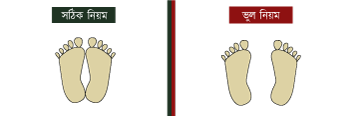
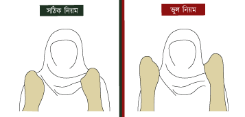
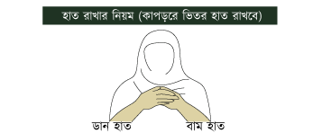
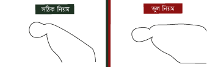
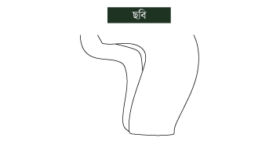
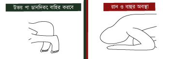
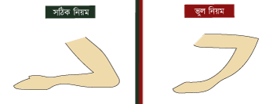
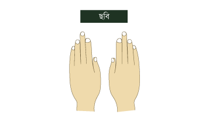

নারীদের নামাজ পড়ার উল্লেখযোগ্য নিয়মসমূহ
(পুরুষের নামাজের সাথে পার্থক্যসমূহ)
নারীদের নামাজের সময় মুখমণ্ডল, হাতের তালু ও পা ব্যতীত শরীরের সমস্ত অংশ কাপড় দিয়ে ভালোমতো আবৃত করতে হবে। বাইরে থেকে শরীরের আকার বোঝা যায়, এমন কাপড় ব্যবহার কঠোরভাবে অনুচিত। ঢিলেঢালা চাদর বা উড়না দ্বারা সমস্ত শরীর আবৃত করবে।
অপর লোকে দেখতে পারে, এমন খোলামেলা স্থানে যেমন ঘরের বারান্দা বা উঠানে নামাজ পড়া অনুচিত। ঘরের অভ্যন্তরে নামাজ পড়া উত্তম। কোন স্থানে যদি নারীদের উপযুক্ত পর্দার মাধ্যমে পৃথক স্থানে নামাজের বন্দোবস্ত করা হয়, তাহলে নারী লোক জামায়াতে অংশগ্রহণ করতে পারবে, তবে তা পুরুষের ন্যায় জরুরি নয়, কেননা এতে অনেক সময় ফেৎনা ফ্যাসাদের সম্ভাবনা তৈরি হয় এবং কঠোর পর্দার মাধ্যমে মসজিদে আসা যাওয়া নিশ্চিত করা অনেক সময়ই সম্ভবপর হয়ে উঠে না। নারীদের জন্য ঘরে নামাজ আদায় করাই সর্বদিক থেকে বরকতময়।
নারী নামাজের সময় দুই পা মিলিয়ে দাঁড়াবে। পুরুষের ন্যায় দুই পায়ের মাঝে কোন ফাঁকা জায়গা রাখবে না।

তাকবীরে তাহরিমার সময় মেয়েরা কান পর্যন্ত হাত উঠাবে না, বরং কাঁধ বরাবর উঠাবে। এবং হাত অবশ্যই কাপড়ের ভেতরে রেখে উঠাবে।

মেয়েরা পুরুষের ন্যায় নাভির নিচে হাত বাঁধবে না, বরং বুকের উপরে হাত বাঁধবে। হাত বাঁধার সময় পুরুষের ন্যায় কবজি চেপে ধরবে না। শুধুমাত্র বাম হাতের উপর ডান হাত বিছিয়ে দিয়ে চেপে ধরবে।

মেয়েদের রুকুর সময় অধিক ঝুঁকে মাথা, পিঠ ও কোমর এক বরাবরে আনার প্রয়োজন নেই। মেয়েরা রুকুতে কম ঝুঁকবে।

মেয়েরা রুকুতে হাতের আঙুলগুলো মিলিয়ে রাখবে, হাতের আঙুলগুলোর মধ্যে কোন ফাঁকা রাখবে না। হাত দিয়ে হাটুর উপর চেপে ধরবে, কিন্তু আঙুল দিয়ে হাঁটু আকড়ে ধরতে হবে না।
মেয়েরা রুকুর সময় পা একদম সোজা রাখবে না। বরং হাঁটু সামান্য সামনে ঝুঁকে রাখবে ও পিঠ সামান্য বাঁকা করবে।
মেয়েরা রুকু করার সময় বগল ও বাহু মিলিয়ে রাখবে। পুরুষের মতো বগল ও বাহু পৃথক রাখবে না।

সিজদাহে যাওয়ার সময় পুরুষ জমিনে হাঁটু ঠেকানোর আগে শরীরের উপরিভাগ সামনে ঝুঁকাতে পারবে না। কিন্তু নারী সিজদাহে যাওয়ার সময় শুরু থেকেই মাথা ও শরীরের উপরিভাগ সামনে ঝুঁকাতে পারবে।
মেয়েরা সিজদাহ করার সময় পেট রানের সাথে ও বাহু বগলের সাথে মিলিয়ে রাখবে। দুই পা সোজা রাখার পরিবর্তে ডান দিকে বাহির করে দিয়ে জমিনে বিছিয়ে রাখবে। বাম পায়ের উপরে ডান পা রাখবে।

নারী সিজদাহ করার সময় হাত জমিনে বিছিয়ে রাখবে। কুনুই উঁচু করে রাখবে না।

দুই সিজদাহর মাঝখানে এবং নামাজের বৈঠকের সময় নারী দুই পা ডান দিকে বের করে দিয়ে বিছিয়ে রাখবে এবং বাম নিতম্বের (পিছনের নিম্নাংশ) উপর বসবে। উভয় পা ডান দিকে বের করে বিছিয়ে রাখবে। ডান পায়ের নলা বাম পায়ের নলার উপরে রাখবে।
সর্ব অবস্থায়, রুকু, সিজদাহ, বসা, দণ্ডায়মান; আঙুলগুলো মিলিয়ে রাখবে। আঙুলগুলোর মধ্যে ফাঁক করবে না।
